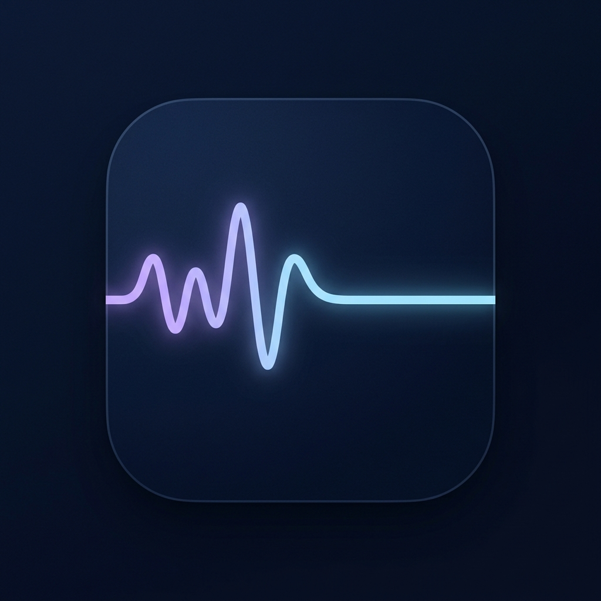

ZeroNoise
소음과 생각을 지우는 몰입의 방
게스트 모드
기록 저장 꺼짐
ZeroSlate에서 열기
몰입 타이머
25:00
집중 시간
집중: 25분
휴식: 5분
사운드스케이프
🎛️ 사운드 믹스 프리셋
기본 백색 소음
뇌파 동조 (Binaural Beats)
⌨️ 키보드 사운드
Typing Click (키보드 효과음)
글을 쓸 때 기계식 키보드 소리가 납니다.
🌿 자연의 소리
Rain Filter (빗소리 효과)
소리를 먹먹하고 아늑하게 조율합니다.
Wind Aura (바람소리 효과)
숲 속의 아늑한 바람결 소리를 합성합니다.
Ocean Waves (잔잔한 파도)
잔잔하게 밀려오는 파도 소리를 합성합니다.
Huge Waves (큰 파도)
거칠고 시원한 큰 파도 소리를 합성합니다.
Night Field (밤들판)
풀벌레가 우는 고요한 밤들판 소리를 합성합니다.
Cozy Fireplace (모닥불 소리)
따뜻하게 타오르는 장작 소리를 합성합니다.
Quiet Room (조용한 방)
미세한 공기 소리가 감도는 조용한 방 소리입니다.
화면 설정
젠 라이터 (Zen Writer)
개인 기록 보호
ZeroSlate에서 열기
글쓰기와 보관함은 ZeroSlate 계정에서만 열립니다.
게스트에서는 사운드와 타이머만 사용할 수 있어요. 기록, 성과, 기기 간 동기화는 ZeroSlate Pro Suite에서 이어집니다.